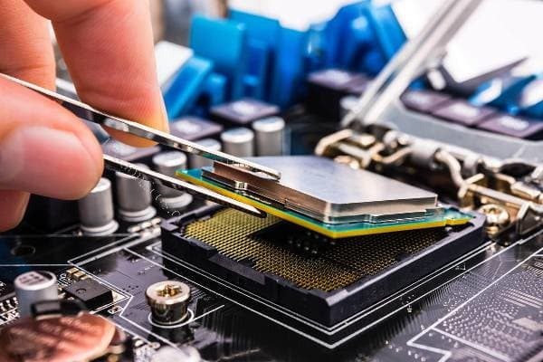
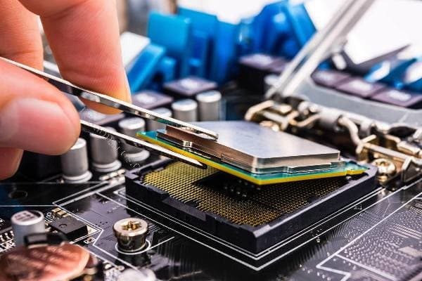

Mantenimiento de computadoras
Si tu computadora no funciona como debe, ¡No se trata de una maldición! Lo más probable es que sea así porque no la mantienes como es debido
La limpieza, tanto física, es decir del hardware, como del software son esenciales para el perfecto funcionamiento de una PC. Tanto que existen tres tipos básicos de mantenimiento.
Qué vas a encontrar aquí: Tipos de mantenimiento de computadoras: preventivo, correctivo, predictivo, proactivo. Cómo limpiar la PC? Crear un plan de mantenimiento. Realizar copias de seguridad. Actualizar el sistema operativo.
 



Tipos de mantenimiento de computadoras
Mantener la computadora en óptimas condiciones de funcionamiento es crucial para poder evitarte problemas, y para lograr tus objetivos laborales o de estudio con la mejor calidad y comodidad posibles.
¿Sabías que para ello existen diferentes tipos de mantenimiento del equipo?
Mantenimiento preventivos
Se podría definir al mantenimiento preventivo como la necesidad de crear un ámbito de funcionamiento favorable para la computadora, es decir la necesidad llevar a cabo una serie de actividades para que el equipo de cómputo se encuentre protegido ante cualquier problema.
Por ejemplo, la mayor parte de las computadoras suelen fallar debido a la acumulación de polvo sobre sus componentes o rejillas de ventilación.
Es por ello que se hace evidente la necesidad de mantenerlo limpio, tanto por dentro como por fuera, como así también comprobar que todos sus periféricos, cables, adaptadores, estabilizadores y hardware se encuentren en excelentes condiciones de uso.
Si vas a realizar esta comprobación deberías también incluir el software de la computadora, es decir si están actualizados a la última versión el sistema operativo, los programas de usuario y los controladores de dispositivos.
Esto es de mucha importancia al momento de evitar peligros con malware y otros programas malintencionados.
Para llevar a cabo un buen mantenimiento preventivo de la computadora es necesario obtener algunas herramientas además de un poco de paciencia.
Ten en cuenta que según la cantidad de tiempo que lleve una computadora sin mantenimiento, mayor será las condiciones de suciedad con la que nos encontrarás.
En definitiva, la suciedad es el mayor factor de fallas en una computadora.
Es por ello que en este punto debes hacer una buena limpieza del interior del equipo ya que el polvo, mezclado con las grasas y aceites presentes en el aire forman una peligrosa película que no dejará irradiar el calor generado por los componentes de la motherboard y los demás componentes.
Esto lleva a que los componentes se recalienten y eventualmente fallen debido a problemas en las soldaduras, o hasta incluso en los componentes electrónicos que la conforman.
Este mantenimiento preventivo de la computadora debe hacerse de manera regular, ya que esto te permitirá prolongar la vida útil de la computadora, además de conseguir que ésta funcione siempre al máximo de su capacidad.
Insumos para el mantenimiento preventivo
Los materiales y herramientas utilizados para llevar a cabo un buen mantenimiento preventivo de una computadora son simples, y las puedes conseguir en cualquier lado.
Son los siguientes:
- Un destornillador estrella
- Una brocha no muy grande
- Paños de limpieza
- Una lata de aire comprimido (opcional)
Para hacer un mantenimiento preventivo del software de la computadora, necesitarás lo siguiente:
- Un disco extraíble
- Tarjetas de memoria o pendrives (para hacer un backup de la información )
- Las actualizaciones del sistema o de los programas de usuario
- Conexion a Internet
Mantenimiento correctivo
El mantenimiento correctivo de una computadora se realiza con el objetivo de solucionar los problemas que se suscitan con el uso del equipo, es decir reparar lo que se pueda haber averiado.
Este mantenimiento es la forma más simple de proporcionar reparación y mantenimiento a una computadora, ya que se realiza una vez que el equipo ha fallado, y por lo general implica el recambio de alguno de los componentes del hardware.
Además, existen dos tipos de mantenimiento correctivo: El mantenimiento correctivo contingente y el mantenimiento correctivo programado:
- Mantenimiento correctivo contingente: También llamado “No planificado”, es el mantenimiento que se lleva a cabo exactamente luego de que ocurra un fallo en la computadora, y que es necesario realizar ya que de otra manera no se puede utilizar.
- Mantenimiento correctivo programado: Es un tipo de mantenimiento que se realiza con el propósito de adelantarse a los posibles problemas que puede presentar el hardware de una computadora.
Esto significa que el mantenimiento se realiza cambiando piezas de la PC, que de acuerdo a experiencias previas, se sabe que van a fallar en un determinado momento.
Mantenimiento predictivo
El mantenimiento predictivo está estrechamente ligado al mantenimiento de tipo proactivo. Consiste básicamente en la detección temprana de fallas, es decir antes de que estas sucedan, lo que te permite solucionar el posible problema sin las complicaciones de tener que hacerlo cuando la computadora está en pleno funcionamiento.
Por eso puedes hacerlo de manera programada. Para hacer este tipo de diagnósticos se utilizan herramientas de software como Maintenance Pro, que provee de una serie de características muy interesantes con las cuales seguir la evolución de las fallas de un equipo de computación.
Algunas de las ventajas del mantenimiento preventivo son las siguientes:
- Posibilidad de seguir la evolución de un determinado problema
- Optimización del tiempo de manteniendo
- Conocer estadísticas muy precisas de las fallas en los equipos
Mantenimiento proactivo
El llamado Mantenimiento Proactivo es un tipo de mantenimiento especializado en la identificación y solución de las causas que suscitan problemas en las computadoras. Esta técnica está enfocada en encontrar la fuente de los problemas, no en los fallos que estos pueden provocar.
El mantenimiento proactivo se basa en el mantenimiento de tipo predictivos, pero a diferencia de este, en el mantenimiento proactivo es necesaria la participación del personal encargado del buen funcionamiento del equipamiento.
Para que el mantenimiento proactivo pueda ser viable, por supuesto es necesario que exista una excelente organización de los recursos con los que se dispone, además de una planificación exhaustiva de las tareas que se llevarán a cabo.
El objetivo de esto es que el equipamiento de cómputo deba ser sacado de línea el menor tiempo posible, con lo que se pueden reducir los costes y otros beneficios asociados a no detener la producción.

Plan de mantenimiento de computadoras
La necesidad de crear un plan de mantenimiento de computadoras es evitar que los equipos fallen debido a problemas técnicos encontrando y corrigiendo aquellos pequeños problemas antes de que se conviertan en fallas que deban ser analizadas y solucionadas por expertos del soporte técnico, lo que seguramente demandará pagar una factura.
Si no prestas atención al mantenimiento de tus computadoras , lo más probable es que estos con el tiempo fallen debido a problemáticas asociadas con componentes sueltos, suciedad, humedad y otros muchos factores.
Es por ello que debe establecerse un plan de mantenimiento, lo cual es una de las mejores maneras existentes para asegurar el buen estado de tus computadoras y mantenerlas en un grado óptimo de funcionamiento.
Este plan de mantenimiento de computadoras debe incluir tanto el mantenimiento preventivo como el correctivo. También es una parte importante del mismo el mantenimiento proactivo.
¿Qué debo hacer antes de empezar a limpiar mi PC?
- Desconectar la PC y retirarlo de la toma eléctrica
- Nunca usar agua para limpiar el gabinete por dentro
- Nunca retirar las teclas de una notebook
- Recuerda que por lo general los componentes de la PC son sensibles, por lo tanto, necesitas ser cuidadoso para no afectar al funcionamiento de tu equipo.
Plan de mantenimiento preventivo de la PC
Los buenos hábitos ayudan a economizar tiempo, dinero y problemas. Es por ello que a partir de este punto te ofrecemos varios consejos para mantener tu PC funcionando sin problemas.
Una vez que tengas tu flamante computadora sobre el escritorio, una de las primeras cosas que tienes que hacer es diagramar una estrategia de limpieza y mantenimiento para que la inversión que acabas de hacer se mantenga durante la mayor cantidad de tiempo posible.
Para ello, lo mejor que puedes hacer para mantener una computadora nueva en óptimas condiciones es:
- Instala una UPS o al menos un estabilizador de buena calidad. Ten presente que necesita que continúe funcionando en caso de falta de energía, pues mientras más dispositivos, menor la autonomía de la UPS. Recuerda que la función de una UPS es darte tiempo para apagar la PC con tranquilidad y seguridad, no para continuar trabajando hasta agotar la batería.
- Durante la instalación de los programas, haz el registro que te solicite cada uno. Así vas a garantizar el acceso a actualizaciones, informaciones útiles y promociones para acceder a nuevas versiones.
- Configura la auto-actualización de los programas cuando esté disponible. Así no tienes que preocuparse por eso.
- Si tu PC es "de marca", probablemente vino con un manual. Lee los consejos de mantenimiento del fabricante.
- Configura el auto-archivado de los correos en tu programa de e-mail. Este procedimiento evitará futuros problemas de corrupción del archivo de mensajes y demora en el acceso y lectura
- Instala un anti-virus de calidad.
- Instala un software anti-spyware/anti-adware de calidad.
- Guarda todos los CDs de instalación en un solo lugar. Crea una carpeta en el disco rígido y copia el contenido de todos estos CDS en sub-carpetas.
Actualizar el sistema operativo
Por último, entre las tareas de mantenimiento más importantes para que tu computadora tenga un correcto funcionamiento es actualizar. Esto significa actualizar cada vez que se requiera tus sistemas operativos, los controladores y tus programas.
Como sabes, la mayoría de las aplicaciones te avisan cuando hay disponible una actualización. Lo mismo sucede con el sistema operativo, sea Windows, Linux o Mac.
Ahora, muchos de los problemas que pasan en tu computadora son debido a que has dejado pasar mucho tiempo sin limpiar Windows.
Si quieres solucionarlos, en este post encontraras todos los pasos para limpiar Windows y dejarlo como recién instalado: Como limpiar Windows paso a paso.